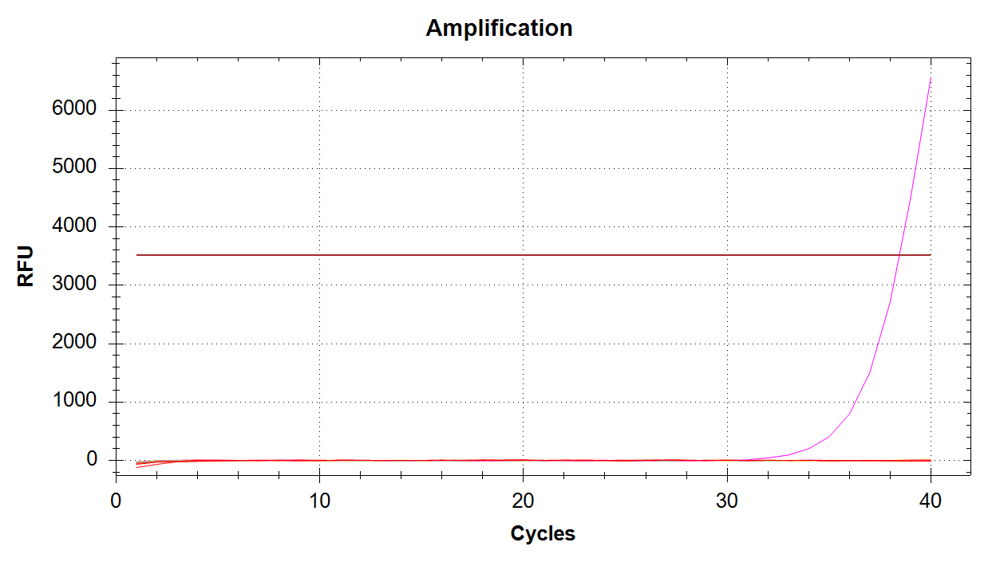
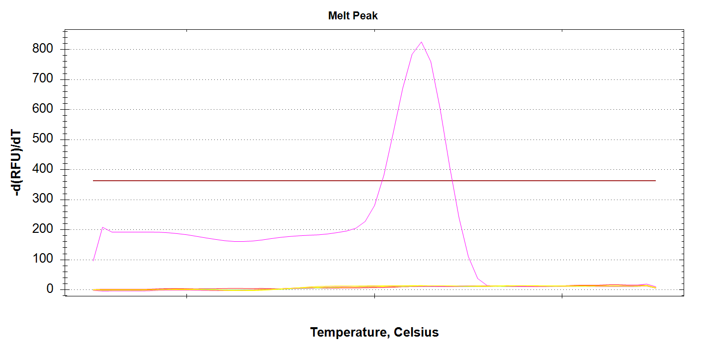
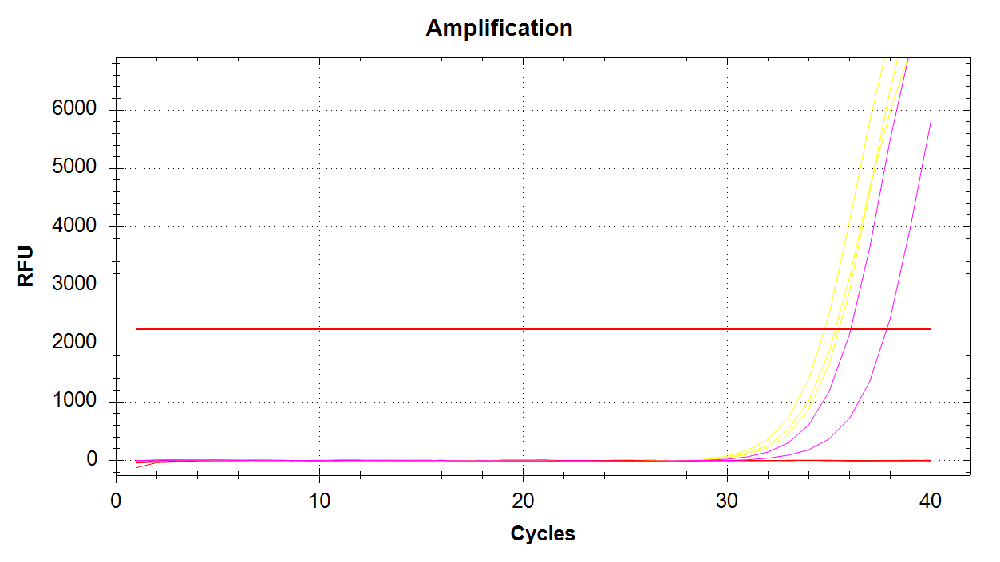
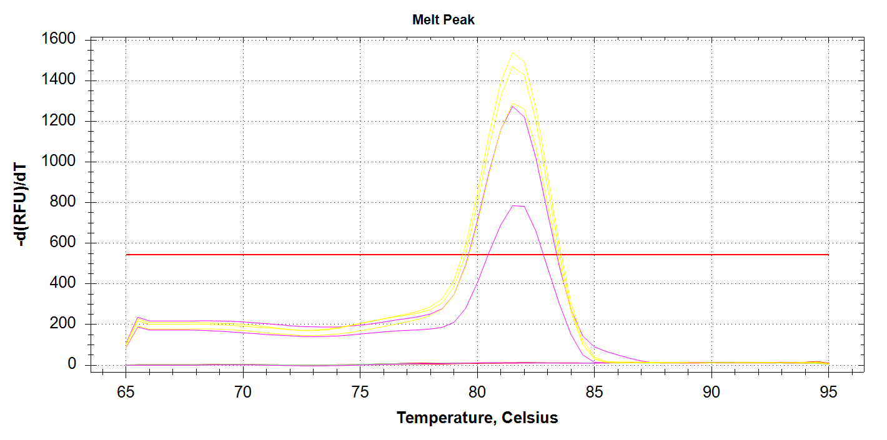
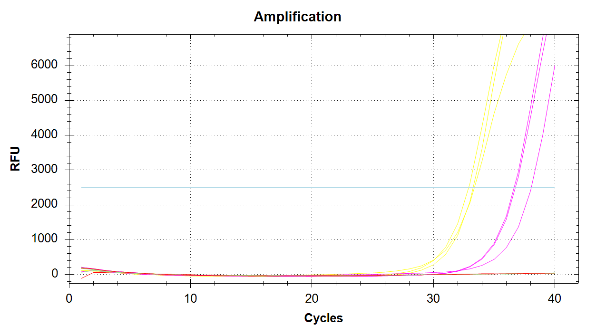
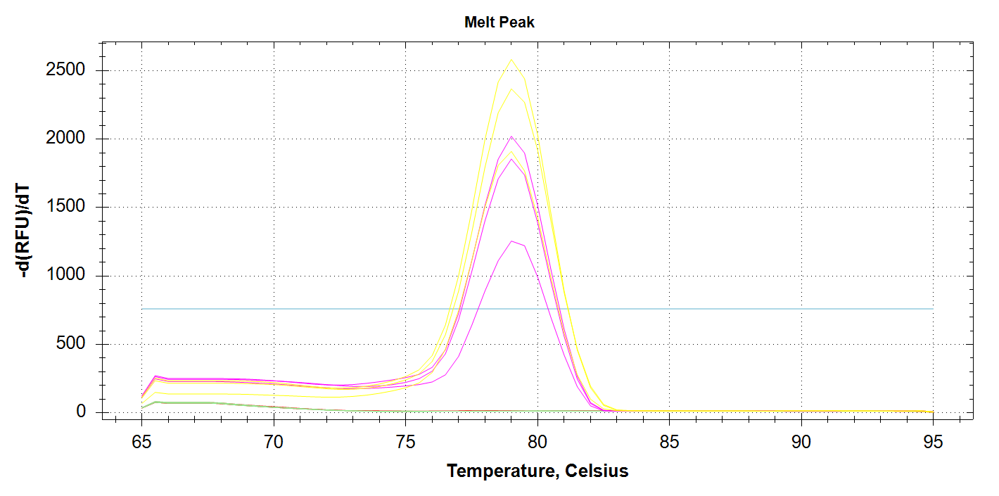

Intro
After quantifying the DNA and awaiting a response on how to handle the lack of DNA in 20 of the samples, I decided to create a serial dilution of some pooled DNA and test the three primer sets. I’d like to get a sense for their specificity, as well as their sensitivity.
All primers had been previously ordered/prepped by Tanya Brown. It’s my understanding that all three primer set sequences have been taken directly from previously published articles. One caveat is that those articles used these primer sets along with a probe oligo. Due to costs/time, these qPCRs (and all subsequent qPCRs) were performed using SYBR green (i.e. no probe oligo).
- CAct (C symbiont) (Ross Cunning and Baker 2012)
- DAct (D symbiont) (Ross Cunning and Baker 2012)
- Mcap_PaxC (R. Cunning, Ritson-Williams, and Gates 2016)
Serial Dilutions
Created a 10ng/uL (10,000pg/uL) “stock” consisting of three samples, two non-bleached (NB) and one bleachd (B). Selected the following samples and pooled them in the following fashion:
Samples Used
| SAMPLE | CONCENTRATION(ng/uL) | VOLUME_USED(uL) | DNA(ng) |
|---|---|---|---|
| T4.M.41.NB | 21.6 | 3 | 64.8 |
| T5.M.74.B | 10.9 | 3 | 32.7 |
| T4.M.10.NB | 4.44 | 3 | 13.32 |
| TOTAL | 9 | 110.82 |
Dilution Calculations
Created the 10,000pg/uL stock solution:
| Concentrationinitial(ng/uL) | Volumeinitial(uL) | Concentrationfinal(ng/uL) | Volumefinal(uL) | Volume H2O to reach Volumefinal |
|---|---|---|---|---|
| 12.31333333 | 9 | 10 | 11.082 | 2.082 |
10-fold serial dilutions were created, down to 10pg/uL, using 2uL from each previous “stock” in 18uL of H2O.
qPCRs
All qPCRs were run in triplicate for each dilution (1000pg, 100pg, 10pg), with SsoAdvanced Universal SYBR Green Supermix in 20uL reactions. Each primer was utilized with an initial “working stock” concentration of 10uM and at a final concentration of 0.25uM in each qPCR reaction. See the qPCR Report for cycling parameters.
qPCR calculations are here:
20231119-qPCR_calcs(Google Sheet)
Results
Output files
Raw qPCR data (.pcrd; Requires CFX Maestro):
sam_2023-11-19-08-35-30_Connect.pcrd)- “Analysis Mode” was set to “Target” (“Fluorophore” is the default.)
qPCR data (CSV):
qPCR Report (PDF):
CAct Amplification
| Amplification Plot | Melt Plot |
|---|---|
|  |  |
Here we see a single sample amplifying, which corresponds to 100pg of input DNA. It’s odd there’s no amplification in any of the 1000pg samples, considering we got late amplification in one of the 100pg samples… Will have to re-run. Possibly will order fresh primer stocks.
DAct Amplification
| Amplification Plot | Melt Plot |
|---|---|
|  |  |
We see all three reps of 1000pg DNA amplifying (yellow lines) and two of the three 100pg reps amplifying (pink lines). No amplification with 10pg of input DNA. Melt curves look good.
Mcap_PaxC Amplification
| Amplification Plot | Melt Plot |
|---|---|
|  |  |
We see all three reps of 1000pg DNA amplifying (yellow lines) and all three 100pg reps amplifying (pink lines). No amplification with 10pg of input DNA. Melt curves look good.
SUMMARY
DAct and Mcap_PaxC primers appear to work well and produce amplification at 1000pg and 100pg.
CAct primer set only amplified a single sample at 100pg. Will need to repeat this, but will plan on ordering a fresh primer set to ensure that issues aren’t due to age.